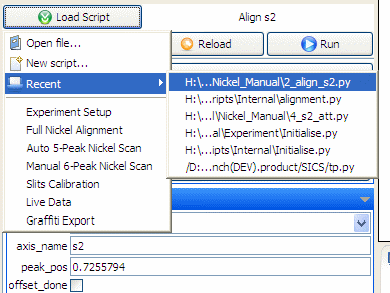
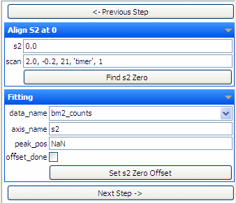

Python in Gumtree provides you access to instrument status and experiment data, which can be used as feedback to control the experiment. It will be also convenient for users to have some GUI support on running the experiment.
Python is running at client side now. Which means it is less reliable than the server side program like SICS. However our plan is to run python in server side to control the experiment.
We have Python functions that wrap up SICS commands. For example, drive(), run(), runscan(), histmem(), setpos()
sics.drive('sample_x', 33)Functions that is not SICS like: getValue(), count(), getFilename(), multiDrive(), interrupt(), execute(), runCommand()
sics.getValue('sample_x')Python can listen to SICS event. When a data file gets created or modified, we can write a function to load it and plot it.
def __load_experiment_data__():basename = sics.getFilename()fullname = str(System.getProperty('sics.data.path') + '/' + basename)df.datasets.clear()ds = df[fullname]bm2 = ds[str(data_name.value)]qm = ds[str(axis_name.value)]if bm2.size > qm.size:bm2 = bm2[:qm.size]ds2 = Dataset(bm2, axes=[qm])ds2.title = ds.idds2.location = fullnamePlot1.set_dataset(ds2)Plot1.x_label = axis_name.valuePlot1.y_label = str(data_name.value)Plot1.title = str(data_name.value) + ' vs ' + axis_name.valuePlot1.pv.getPlot().setMarkerEnabled(True)
A convenient graphical user interface is important for inexperienced users. Gumtree provides a drop down list to easily access scripts created by both developers and users themselves. Below is an example of how to access scripts mostly often used and recently used.

Below is the code to create the control area for running the script.
G1 = Group('Align S2 at 0')s2 = Par('float', 0)scan = Par('string', str(math.ceil((s2.value + 2) * 1000) / 1000) + ', -0.2, 21, \'timer\', 1')act1 = Act('find_s2()', 'Find s2 Zero')G1.add(s2, scan, act1)G2 = Group('Fitting')data_name = Par('string', 'bm2_counts', \options = ['bm1_counts', 'bm2_counts'])axis_name = Par('string', 's2')peak_pos = Par('float', 'NaN')offset_done = Par('bool', False)act3 = Act('offset_s2()', 'Set s2 Zero Offset')G2.add(data_name, axis_name, peak_pos, offset_done, act3)nact = Act('next_step()', 'Next Step ->')
Above code gives you these control widgets:

.
Below is an example of a generic alignement script to align devices.
# Script control setup area# script info__script__.title = 'Scan Device'__script__.version = '0.1'G1 = Group('Scan on device')device_name = Par('string', 'dummy_motor', options = ['dummy_motor'], command = 'update_axis_name()')scan_start = Par('float', 0)scan_stop = Par('float', 0)number_of_points = Par('int', 0)scan_mode = Par('string', 'time', options = ['time', 'count'])scan_mode.enabled = Truescan_preset = Par('int', 0)act1 = Act('scan_device()', 'Scan on Device')def scan_device():aname = str(device_name.value)# axis_name.value = anamenp = int(number_of_points.value)if np <= 0:returnstep_size = float(scan_stop.value - scan_start.value) / npslog('runscan ' + str(device_name.value) + ' ' + str(scan_start.value) + ' ' + str(scan_stop.value) \+ ' ' + str(number_of_points.value) + ' ' + str(scan_mode.value) + ' ' + str(scan_preset.value))for p in xrange(np):slog('drive ' + aname + ' ' + str(scan_start.value + step_size * p))sics.drive(str(aname), scan_start.value + step_size * p)sicsext.runscan('dummy_motor', 0, 0, 1,scan_mode.value, scan_preset.value, None, True, \'HISTOGRAM_XY')slog('finished NP ' + str(p))time.sleep(1)devices = sicsext.getDrivables()device_name.options = devicesdef update_axis_name():axis_name.value = device_name.valueG1.add(device_name, scan_start, scan_stop, number_of_points, scan_mode, scan_preset, act1)# Use below example to create a new Plot# Plot4 = Plot(title = 'new plot')# This function is called when pushing the Run button in the control UI.def __run_script__(fns):global Plot1global Plot2global Plot3# check if a list of file names has been givenif (fns is None or len(fns) == 0) :print 'no input datasets'else :for fn in fns:# load dataset with each file nameds = Plot3.dsif ds != None and len(ds) > 0:if ds[0].location == fn:returndf.datasets.clear()ds = df[fn]Plot3.set_dataset(ds[0])def __dispose__():global Plot1global Plot2global Plot3Plot1.clear()Plot2.clear()Plot3.clear()